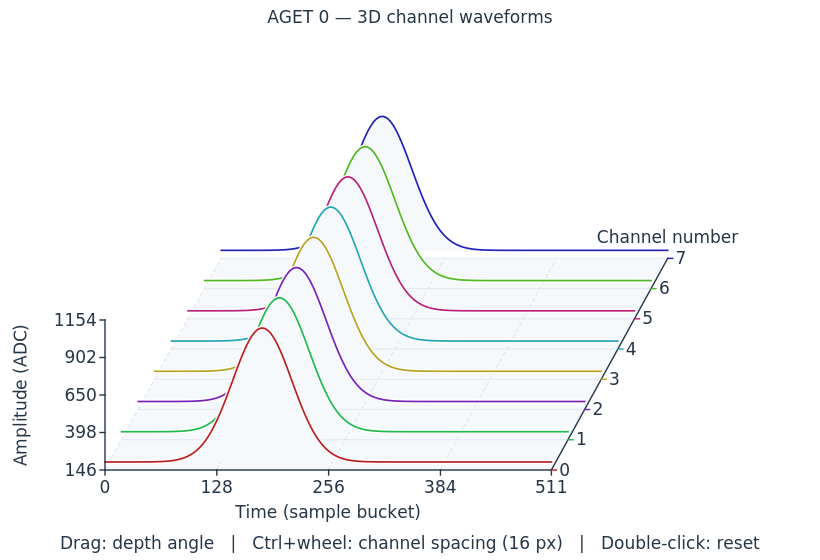

1 GetDAQ installation and user guide
Original SOAP ECC + DataExporter / DataRouter · 2026-11-22
GetDAQ is the console. getEccSoapServer controls electronics. DataExporter / dataRouter receive raw frames and write to disk. Raw data does not pass through the GUI or the configuration distribution service.
Programs and responsibilities
| Control / field | Meaning and effect |
|---|
| GetDAQ | Connect multiple ECCs; control acquisition; show state and receiver statistics; keep local Run records. |
| getEccSoapServer | Original SOAP control server: Describe, Prepare, Configure, Start, Stop, Pause and Resume. |
| DataExporter / dataRouter | Receive CoBo frames and write raw data. DataExporter also offers downstream TCP export for online preview. |
| getdaq-sentry | Monitor the project data directory, report files and throughput, and perform catalog/archive operations. |
| Node agent / configuration service | Pair execution hosts, distribute complete configuration folders, cache releases and manage independent backend instances. |
| getdaq-control-mcp | Independent stdio interface using the saved GUI YAML and original SOAP / Sentry clients. |
The usual sequence
Install → choose directories → set host IPs, ports and experiment IDs → start services or select existing services → Connect → Progress to Ready → Run start → Run stop.
How to read this guide
Pages 2–8 explain installation and operation. Pages 9–20 explain the controls, with configuration concentrated on pages 11–18. Configuration → User guide opens either language inside the software, with an option to save its PDF.
Multiple instances mean multiple ECC / receiver backends, not multiple required GUI windows. Essential third-party source is bundled; system build tools and Qt 5 are still required. Historical source/ is not used for builds.
2 Ubuntu installation
Compile on the target computer and use a new stage directory.
1. Install the system tools
sudo apt update
sudo apt install -y build-essential cmake python3 git openssl \
qtbase5-dev libqt5svg5-dev qttools5-dev-tools
qmake -v
Qt and optional tools
qmake should report Qt 5. With several Qt installations, pass --qmake /path/to/qmake. The full suite needs no separately installed old GET, Boost or Ice, and no ROOT installation.
2. Obtain and verify the complete project
git clone https://github.com/lfhCpp/GetDAQ.git
cd GetDAQ
python3 tools/verify-product-boundary.py
python3 tools/verify-original-backends.py
3. Build into a NEW directory
python3 tools/build-suite.py --profile full --jobs 2 \
--stage "$PWD/dist-linux"
python3 tools/build-suite.py --verify-stage "$PWD/dist-linux"
./dist-linux/bin/GetDAQ
Installed layout
bin/ contains 16 programs in a full build; share/ contains resources; docs/ contains both PDF guides. For a copied installation with sources under code/, cd code first. Use --jobs 1 on a low-memory computer. The control profile supports external ECC connections without the complete local backend suite.
Upgrading an existing installation
Use start-getdaq.sh if that installation supplies it; a generic new stage can run bin/GetDAQ directly. Copy the whole compatible bin/, share/ and docs/ tree. Keep old runtimes, configuration, raw data, Run records and pairing caches. A Linux binary requires compatible system and Qt runtime libraries.
The first GUI launch does not reset or start boards. Complete the directory and network setup before starting backends or connecting existing ECCs.
3 macOS and network addresses
Linux executables cannot run on macOS; compile native binaries on the Mac.
macOS build entry
xcode-select --install
brew install cmake python qt@5
GETDAQ_QT5_PREFIX="$(brew --prefix qt@5)"
export PATH="$GETDAQ_QT5_PREFIX/bin:$PATH"
python3 tools/build-macos.py --help
Packaging
Follow docs/MACOS.md for native build and GetDAQ.app packaging. Native Mac and real-hardware acceptance have not yet been completed. The app carries its helpers and embedded guides. Automated Master / Slave service management currently requires Linux; external SOAP ECC connections remain available on other platforms.
Which IP belongs where?
| Control / field | Meaning and effect |
|---|
| ECC host | Control-network address of the COMPUTER running getEccSoapServer. |
| CoBo IP | Address of the BOARD, defined in the original topology / describe XML/XCFG. The direct information tool also uses it. |
| Receiver control IP | Control-network address of the COMPUTER running the receiver. |
| Receiver data IP | Data-network interface reachable by CoBo. It is the board data destination. |
| Management / SSH IP | Address used for pairing, configuration distribution or SSH; it may be a different interface. |
Common ports: verify the actual listeners
| Control / field | Meaning and effect |
|---|
| 8083 / 46011 | SOAP ECC / original ECC alarm callback. |
| 46003 / 46005 | Receiver control / incoming board-data TCP port. |
| 46491 / 8080 | DataExporter preview export / Sentry HTTP monitor. |
| 24260 / 24250 | Node HTTPS management / master configuration distribution. |
Ports serve different purposes. Same-host backend instances need non-conflicting ports. A board hardware-control endpoint, often 46001, is not the SOAP ECC port.
4 Single-computer configuration
Choose directories first, then interfaces, ports and configuration IDs.
Three directories to distinguish
| Control / field | Meaning and effect |
|---|
| Configuration source | Use the existing installation config/ folder. If absent, a new setup defaults to ~/GetDAQ/config. Store complete XML/XCFG and referenced resources here. |
| Project data folder | Default ~/GetDAQ/data. ECC, receiver and Sentry work here; configuration is copied here and raw .graw is written here. |
| GUI Run records root | Default ~/GetDAQ/runs. Holds run.yml, journal, CSV and backups; it is separate from raw data. |
Visible defaults
New projects, connections and logs use visible ~/GetDAQ subfolders. Existing projects keep saved paths and initialized node identities. Nodes / Paths lets you edit the GUI source and record directories.
Start software-managed original backends
Select Master → Create ECC / data services. Choose the source folder. Click Use this computer (automatic), then Add boards / ECC. Select the execution hosts and project folders, receiver type and experiment. Fill control/data IPs and the respective ports. Keep configuration sync enabled, select the group(s), then Start project services or Start selected groups and use. The GUI applies the selected setup and connects for state queries; it does not start board acquisition.
Equivalent working-directory relationship (illustration)
cd /home/user/GetDAQ/data
dataRouter 192.168.40.10 192.168.50.10 TCP FrameStorage
getEccSoapServer --port 8083 --alarm-port 46011 \
--config-repo-url /home/user/GetDAQ/data
Use existing ECC / DataRouter instead
Choose Connect existing ECC, set its actual SOAP host/port, Check connection, then Save and use in Run Setup. Router host is the receiving data interface and Router port is its DATA port. Existing external ECC keeps its repository/NFS settings; an external DataRouter does not need to be replaced by DataExporter.
The working directory determines receiver output. Managed startup sets it explicitly. Prepare success alone does not prove that the data destination is correct; inspect file growth.
5 Master / Slave and configuration sync
Maintain experiment configuration on the master; select local folders on each slave.
Slave setup
Select Slave, choose its Configuration cache and Project data folder, and Enable / check slave. Copy pairing code to Add slave on the master. A code expires and is consumed after pairing. To change master, explicitly use Remove master connection; accepted work finishes, and backends, data and audit remain.
Master setup and multiple ECCs
Add the slave or Use this computer. When creating a group, choose ECC execution host and Data execution host; these can differ. Their project folders are LOCAL to those hosts. The setup section is expanded by default. In ECC and boards, Ctrl/Shift selects multiple groups. Start selected groups and use starts only those groups and connects them in one Run Setup. Use independent ports on a shared computer.
Master source folder → immutable configuration release → execution-host cache → that host’s Project data folder. Relative resource paths are preserved. Raw data is not distributed with configuration.
How IDs select original files (.xml or .xcfg)
| Control / field | Meaning and effect |
|---|
| Describe ID = cobo0 | Matches describe-cobo0. |
| Prepare ID = pedestals | Matches configure-pedestals; original Prepare uses Configure-type configuration. |
| Configure ID = pedestals | Matches configure-pedestals. |
| Experiment | Names the Run and supplies default IDs; explicit node IDs take priority. |
After editing XML/XCFG
Save in Configuration source. Use Tools → Sync project configuration, select the execution hosts, then Sync selected hosts. Active services require acknowledgment; stable Ready/Running can accept file updates without forced Idle. Known busy commands defer replacement. Synchronizing files does not apply new board parameters; use the relevant ECC Configure operation.
Saved settings and paths
Save and apply in Nodes stores YAML, not an immediate XML transfer. Startup also rereads source files when sync is enabled. Path summaries show current settings and separately report old running/prepared paths. A normal backend restart applies a changed working directory. Removing a saved connection hides history while preserving files; a slave can hide inactive instance entries.
6 Acquisition and logs
Use actual ECC state to judge acquisition, and receiver files to judge recording.
Start
Check Experiment, Run number and notes; Save YAML. Connect queries actual state. If already Ready, do not force Idle just because the GUI reconnected. Progress all advances Describe → Prepare → Configure. At Ready, Run start, then observe Running, file growth, data rate and disk space.
Pause / Resume
Run → Pause run is enabled when every ECC is stably Running and no command is in progress. Resume run corresponds to stable Paused. This also works after connecting to acquisition started outside this GUI. Resume continues the same acquisition; it does not start a new Run or fabricate local records.
Stop
Run stop first waits for every ECC to confirm Ready; catalog, configuration backup and local finalization follow. Successful archive is usually <project>/<Experiment>/run_NNNN/. On archive warning, files may remain in the incoming directory. A record failure is not proof of a hardware stop failure; a local message alone is not proof the boards stopped.
Warnings and continued operation
| Control / field | Meaning and effect |
|---|
| Local record / backup failure | Warn and retain records; allow a manual next Run. Automatic continuation is canceled. |
| Uncertain catalog result | Keep the unknown receipt; no automatic replay. With Ready confirmed, close local Run processing and continue manually. |
| Stale state / missing monitor | Request acknowledgment where appropriate. The ECC decides whether hardware commands are valid. |
| Existing Run / incoming files | Require explicit confirmation; do not silently delete raw data. |
| Start / Stop / Disconnect | Remain available after connection. In-flight hardware commands are serialized. Disconnect detaches observation; it does not stop remote acquisition. |
Read, clear and export logs
Use Event log / ECC log / Data log and the host/instance selector; shared Sentry is also selectable. Each GUI launch starts a new log session and attaches at the current end of backend logs. Clear affects the display, while export retains this session’s collected history. Tools → Logs → Export combined logs writes TXT ordered by GUI receipt time and sequence, with source separators and original remote timestamps.
On main-window exit, managed backends offer Stop ECC + data and exit, Keep services running and exit, or Cancel. Stop acquisition first. A backend-stop failure keeps the GUI open. External ECC services are left running.
7 Waveforms and 3D
Online and offline viewers use electronics channels; no pad mapping is assumed.
Offline files
Tools → Waveform viewer opens .graw/.gmat. Open waveform selects a file; Event ID / Go to event chooses an event; Frame and AGET select its frame and chip. .gmat uses frame indices instead of real event IDs. Channels chooses visible channels; Export plot/data saves PNG or CSV.
Online preview
Tools → Online waveform viewer starts an independent process. Select a current DataExporter or all configured exporters; it uses the configured preview export port, not the incoming board-data port. Then select Source, CoBo, AsAd and AGET. Refresh interval controls display updates (100–10000 ms; default 1000 ms). Follow latest tracks matching events; uncheck it or use Event ID / Go to freeze a cached event while receiving continues.
Memory counters
Cache is current raw-frame payload, bounded by 100 events, 4096 frames or 256 MiB. Old events are evicted. Received total is only a cumulative byte counter. A frozen event, decoding and network buffers use additional bounded memory. New session clears preview frames; closing the viewer releases its process memory. Pause preview disconnects forwarding to reduce load; raw recording continues. After a disconnection, click Reconnect preview: automatic retries are disabled.
3D axes and controls
| Control / field | Meaning and effect |
|---|
| Time (sample bucket) | Buckets 0–511; not nanoseconds unless the sampling frequency has been established. |
| Amplitude (ΔADC / ADC) | Align baselines defaults on: subtract each channel median for display and align zero references. Uncheck for absolute ADC. All channels use one amplitude scale; 2D and CSV keep raw ADC. |
| Channel number | Depth uses actual selected channel numbers; no interpolation or filled waveform sheets. |
| Drag / Ctrl+wheel / double-click | Change depth angle / channel spacing / reset view. Normal wheel scrolls long channel plots. |

Eight synthetic channels with different baselines, displayed aligned. This is a rendering example, not hardware acquisition evidence.
8 MCP and troubleshooting
The independent stdio adapter uses the saved GUI YAML and original SOAP / Sentry.
MCP configuration example
{
"schema": 2,
"run_config": "/absolute/path/to/envoy.yml",
"allow_control": false,
"request_timeout_ms": 30000
}
Client setup
Use the absolute bin/getdaq-control-mcp executable and arguments ["--config", "/absolute/path/to/mcp.json"]. On macOS it is inside GetDAQ.app/Contents/MacOS. Queries: ecc_configuration, ecc_status, ecc_receivers and ecc_operation. Control is disabled by default.
Explicitly enabled control request
{"node_id":0,"command":"stop","operation_id":"stop-001",
"confirmation":"I_CONFIRM_stop_stop-001"}
Control receipts
Set allow_control=true locally and restart the adapter before submitting control. Each operation needs its unique ID and matching confirmation. An uncertain result is not replayed with that ID; inspect status/receipts. Existing operation directories are reused to preserve deduplication. Full Run recording and archive remain GUI responsibilities; avoid concurrent controllers on the same board. See docs/MCP_SETUP.md.
Troubleshooting
| Control / field | Meaning and effect |
|---|
| Connection refused | Check the actual computer, listener and port purpose: SOAP, receiver control/data and preview are distinct. |
| Node authentication required (401) | A management credential expired. Startup checks local pairing; a remote slave needs explicit re-pair and Add slave to update its existing entry. |
| Prepare timeout / Unknown | Remote execution may already have occurred. Query state and inspect ECC log before repeating a command. |
| No rate / no waveform | First verify raw-file growth, then Sentry directory, data interface/port and preview export port. |
| Missing configuration | Check source, distribution targets, file IDs, ECC repository and NFS. Prepare selects configure-ID. |
| Record / catalog warning | After Ready is confirmed, manual acquisition can continue. Retain raw files and uncertain receipts. |
Software tests do not replace real-board, data-quality or native macOS acceptance. The following pages explain every main control and configuration field.
9 Controls: main window and entry points
Find controls by their actual English labels.
Run setup and menus
| Control / field | Meaning and effect |
|---|
| New configuration… | In Configuration, save a new YAML using existing services and paths. Disconnect first, enter the experiment and choose a new file. Run resets to 0; notes, parameter values and auto rules clear. Keep the experiment to reuse ECC matching. Old files remain; next startup restores the new YAML. |
| Open YAML / Save YAML | Read or save GUI connection and Run settings. This is not opening or distributing board XML. |
| Nodes / Paths | Edit node endpoints, configuration source, GUI records directory and timeouts. |
| Master / Slave | Choose this computer’s role. Single-computer use selects Master, then Use this computer. |
| Configuration / User guide | Open ECC management, the original configuration editor, or either embedded language guide. |
| ECC / data service instances… | Open the shared Master/Slave, existing-ECC and managed-backend window. |
| GET configuration files... | Launch the original configuration editor on Configuration source; disconnect before editing. |
| Tools / ECC / data service manager… | Tools provide sync, diagnostics, waveforms, conversion and logs. Service manager is the same backend-management entry. |
| Run / Recovery | Run contains Pause/Resume. Recovery → Status and warnings handles notifications and explicit Idle regression. |
Metadata
| Control / field | Meaning and effect |
|---|
| Experiment / Run | Experiment name and Run number. Explicit Describe/Prepare/Configure IDs select ECC files. |
| Run description / note | A note saved with the acquisition records. |
| Add parameter / Remove selected | Add or remove a selected Run-record metadata row. These are not board-register settings. |
Existing backends: Master → Connect existing ECC. Managed backends: Master → Create ECC / data services. Slaves choose their local directories and enable their agent first.
10 Controls: acquisition and automatic Runs
These commands affect boards or Run bookkeeping, not backend process lifetime.
Acquisition controls
| Control / field | Meaning and effect |
|---|
| Connect / Disconnect | Query hardware and receiver state / detach the GUI. Disconnect retains remote processes and acquisition. |
| Progress all / Regress all | Advance or undo one initialization stage for all nodes: Idle, Described, Prepared, Ready. Sends board commands. |
| Progress selected node / Regress selected node | Advance or undo only the selected node; first check the node selector. |
| Run start | Start acquisition and reserve records, or attach if already Running. Existing records/files require confirmation. |
| Run stop | Request board stop, confirm Ready, then perform archive, backup and local finalization. Backends remain running. |
| Retry finalization | Retry recoverable local bookkeeping, not an uncertain remote catalog action. |
| Recover journal | Load the original Run journal to resume interrupted bookkeeping; it does not prove board state. |
| Resume failed catalog replacement | Only available for a particular failed replacement in the original live session after checks pass. |
Automatic Run
| Control / field | Meaning and effect |
|---|
| Enable / Time / File size | Enable threshold rules. If both thresholds are selected, the first reached triggers the action. |
| Stop / Next Run | Stop at the threshold, or continue only after successful finalization and confirmed Ready. |
| Runs / Unlimited | Total sequence length including the first Run; zero means unlimited. |
| Apply | Apply rules before starting. Changed fields are pending until Apply; manual Run stop cancels continuation. |
Usual sequence: Connect → Progress to Ready → Run start → Run stop. To close backend processes, use service management after stopping acquisition.
11 Configuration: Nodes / Paths
Store GUI connection settings here; electronics parameters remain in original XML/XCFG.
Buttons and directories
| Control / field | Meaning and effect |
|---|
| Configure and manage ECC / data services… | Open role, existing connection and backend management; bring accepted settings back to Run Setup. |
| Add CoBo / Remove selected | Add a GUI node row or remove the current row. This does not create/delete a backend or raw files. |
| Browse… | Choose the local directory beside this button. It does not browse a remote host. |
| Sync configuration to project folders before starting services | Store the startup sync preference. Merely checking it and saving Nodes does not transfer XML. |
| Save and apply / Cancel | Validate and write YAML, or discard unsaved edits. Previously accepted backend work remains. |
Node columns
| Control / field | Meaning and effect |
|---|
| ID / Role / Name | Unique GUI ID, cobo/mutant role and display label. Managed ECCs may each have their own physical CoBo[0]. |
| ECC host / ECC port | SOAP ECC computer address and service port; not the board IP. |
| Sentry host / Sentry port | Receiver-directory monitor host and HTTP port, commonly 8080. |
| Router host / Router port | Primary board-data destination, e.g. data-network IP:46005; not receiver control port. |
| Legacy ECC target host / port | Optional old second board-data destination. Normally port 0. It is not downstream preview export. |
| Describe / Prepare / Configure ID | IDs selecting describe-ID / configure-ID files; original Prepare uses configure-ID. |
| Preview host / Preview TCP port | DataExporter online preview address, commonly 46491; zero disables preview configuration. |
Configuration source is local XML/XCFG. GUI Run records root is local metadata. Raw .graw folder is reported by Sentry on the receiver host; these are distinct.
12 Configuration: an existing ECC
Master → Connect existing ECC connects to a server that is already running.
Choose, check and save
| Control / field | Meaning and effect |
|---|
| Saved ECC connections / New connection | Load a saved profile or enter another. Saved history does not prove a service is online. |
| Remove saved connection | Forget that history item; keep YAML, remote processes and data. |
| Existing receiver IP and data port | Expand receiver, preview and record-directory settings. It does not start a receiver. |
| Browse… | Choose the GUI computer’s local Run-record directory. |
| Check connection | Detect SOAP compatibility and read ECC state only. Recheck after changing the inputs. |
| Save and use in Run Setup | After a successful check, save YAML and apply it to the console, which connects for observations. |
| Stop waiting / Close (keep services running) | End local waiting or close the window; existing services remain. |
Fields
| Control / field | Meaning and effect |
|---|
| Instance name | Friendly connection name, not a hardware configuration ID. |
| ECC computer IP / ECC service port | The running ECC computer and SOAP listener. |
| Data receiver IP / port (SOAP ECC) | Board-data destination. The real receiver must already listen there. |
| Receiver type / TCP preview export port | Describe the existing receiver and downstream preview port. This does not replace a remote program. |
| Local Run records directory | Local GUI metadata, separate from remote raw files. |
External ECC continues reading its own --config-repo-url repository or NFS. This page does not upload local XML to an unmanaged external ECC.
13 Configuration: master, hosts and source
Choose directories and execution hosts before creating board groups.
Master service and source
| Control / field | Meaning and effect |
|---|
| Configuration source folder / Browse… | Select the master’s complete XML/XCFG source and referenced resources. |
| Sync configuration to project folders before starting services | Distribute source before managed startup. If disabled, existing host files are used with an unverified-content warning. |
| Sync project configuration… | Select execution hosts and immediately distribute configuration, without starting acquisition. |
| First-time setup / edit hosts and boards | Expand Hosts, ECC and boards, and Advanced: master service. Checked by default; hiding pages does not stop services. |
| Start / check master service | Start/check configuration distribution, not SOAP ECC or board acquisition. |
| Open existing project… | Load a directory containing project.json. Refresh is still needed for actual service state. |
| Stop project configuration service | Stop distribution; keep ECC, receivers and node agents. |
Hosts and advanced fields
| Control / field | Meaning and effect |
|---|
| Project data folder on this computer / Browse… | Edit and save the project folder for groups on this computer at any time. Stop and restart affected services to apply it; existing data and agent cache stay in place. |
| Use this computer (automatic) | Join/check the master computer as an execution host; also verifies local pairing and current-project credentials. |
| Add slave | Paste the slave’s complete one-time code. Re-pairing an existing identity updates its entry and preserves group references. |
| Master project directory | Private project, version, credential and receipt directory; not raw data. |
| Master IP reachable from other hosts / Configuration service port | Address reachable by slaves and configuration HTTPS port, commonly 24250. |
The source is on the master; caches and project directories are local to each execution computer. Changing GUI records does not move backend data.
14 Configuration: groups and startup scope
Ctrl-click adds individual groups; Shift-click selects a range.
Daily use and observation
| Control / field | Meaning and effect |
|---|
| ECC configuration | Select one group in the top dropdown. Use the ECC and boards table for multiple groups. |
| Start project services / Start selected groups and use | Reread source, check host authentication, prepare and start only selected groups and receivers/shared Sentry; apply to Run Setup. |
| Use this ECC in Run Setup | Adopt selected prepared, active groups; does not start stopped groups. |
| Refresh / check original operation | Observe hosts, processes and accepted-operation receipts. A historical failed record is not current service state. |
| Stop waiting | Stop local waiting, not accepted remote work. Use Refresh afterwards. |
Group editing and shutdown
| Control / field | Meaning and effect |
|---|
| Add boards / ECC… / Edit selected group… | Create or edit one group draft. OK saves it without immediately starting services. |
| Remove selected group from next release | Remove the current group draft after normal stop or inspected release; retain raw data and audit. |
| Save and sync only | Save and prepare ALL project groups without activation; it does not use the selected startup subset. |
| Stop selected group | Normally stop the CURRENT single group, not every selected row. Stop acquisition first. |
| Terminate selected group… | Confirm termination of matching processes when normal stop cannot finish. Exited processes do not prove board stop. |
| Review terminated group… | After confirming board stop and preserved data, verify no matching process and release the old deployment lock. |
| Stop project services | Normally stop active managed project groups; Run stop first if acquiring. |
| Close (keep services running) | Close management and leave independent backends running. |
Selected groups in one unified Run Setup use the same Experiment. Service startup does not execute hardware Describe, Prepare, Configure or Run start.
15 Configuration: Add / Edit ECC group fields
Same-host instances need distinct ports; services on different hosts can reuse ports.
Identity, directory and hosts
| Control / field | Meaning and effect |
|---|
| Instance name | Friendly group identity for distinguishing ECC / receiver instances. |
| Configuration source (master; edit above) | Read-only here; edit the master source in the parent window. |
| Experiment / configuration ID | For example pedestals, with matching configure-pedestals.xml/.xcfg and describe configuration. |
| ECC execution host / Project folder on ECC host | Computer running SOAP ECC and its LOCAL working/configuration directory. |
| Data execution host / Project folder on receiver host | Computer running the receiver and its LOCAL raw-data working directory. |
| Receiver | Choose DataExporter or dataRouter; online preview requires an actual compatible export service. |
Network and board
| Control / field | Meaning and effect |
|---|
| ECC computer IP / SOAP ECC port | Computer control interface and SOAP listener, commonly 8083. |
| Alarm callback port | Original ECC callback port; avoid same-host instance conflicts. |
| Receiver control IP / Receiver control port | Receiver control interface and management listener, commonly 46003. |
| Receiver data IP / CoBo data destination port | Interface reachable by CoBo and incoming data port, commonly 46005. |
| Waveform TCP export port | DataExporter downstream preview, commonly 46491. Unused by managed dataRouter. |
| Sentry monitor port | Project-directory HTTP monitor, commonly 8080. Shared per host/project folder. |
| CoBo index | Physical CoBo[N] within that ECC. Two different ECCs may each use index zero. |
| Data folders (receiver host) | Shows working/raw and expected successful archive paths for that host. |
| OK / Cancel | Validate/save the group draft or discard edits. Start/Sync applies the saved recipe later. |
ECC instance names and SOAP ports distinguish servers; original XML/XCFG topology determines which physical CoBo IP they control.
16 Configuration: Slave controls
Select local directories and enable the agent; maintain experiment XML on the master.
Buttons
| Control / field | Meaning and effect |
|---|
| Slave: receive configuration and run backend services | Use this computer as an execution node; received files are cached and applied locally. |
| Browse… | Choose the adjacent local cache or project-data folder. Cache selection adds getdaq-node-cache beneath the chosen folder. |
| Enable / check slave | Save/check node configuration and start management. This alone does not start ECC, receiver or acquisition. |
| Copy pairing code | Copy an unexpired unused invitation to Add slave on the master; disabled after pairing is normal. |
| Renew pairing code / Renew / re-pair… | Generate a fresh invitation for an unpaired/expired-code node; older UI may use the longer label. |
| Remove master connection… | Explicitly revoke the old master and generate a fresh code; retain accepted work, backends and data. |
| Management network settings (optional) | Expand management interface and port when defaults are unsuitable. |
| Remove selected inactive entry | Hide a no-process history item, preserving audit/data. Live instances stay visible. |
| Close (keep services running) | Close this window and retain independent services. |
Fields and observations
| Control / field | Meaning and effect |
|---|
| Configuration cache (on this slave) | Local pairing, versions and receipts. It is not a path on the master. |
| Project data folder (on this slave) | Backend working/raw-data directory; received configuration is copied here. |
| Local management IP / port | Address reachable by the master and HTTPS management port, commonly 24260. |
| Instance / Type / Process / Local record | Instance identity, role, matching-process observation and stored deployment phase. |
| ECC configuration cache / Raw data | Actual backend configuration and working-data paths to compare with the master summary. |
A slave can run several ECC backends without several GUI windows. Pairing, backend startup, ECC connection and board acquisition are separate steps.
17 Configuration sync, timeouts and directories
Saving YAML, copying XML and configuring boards are separate operations.
Sync controls
| Control / field | Meaning and effect |
|---|
| Tools → Sync project configuration… | Reread the complete master source and choose execution hosts, including this computer if desired. |
| Host checkboxes / Sync selected hosts | Download and verify an immutable version, then apply relative resources to each selected project folder with backups. |
| OK / Cancel | Confirmation is labelled Sync selected hosts. Cancel drops this selection, not earlier accepted synchronization. |
| Active-instance confirmation | Acknowledged stable Ready/Running can accept files; busy known commands defer replacement. No forced Idle. |
Nodes / Paths time settings (milliseconds)
| Control / field | Meaning and effect |
|---|
| Status polling | Observation interval. Smaller values generate more ECC/Sentry requests. |
| HTTP timeout | Ordinary HTTP request limit, not a complete hardware-transition deadline. |
| Catalog timeout (server normally waits 30 s) | Sentry archive request wait; server-side archive may itself wait about 30 seconds. |
| Transition deadline | Hardware transition plus state-confirmation limit. A timeout can leave remote completion uncertain. |
| Post-stop settling time | Wait after hardware stop before record/archive finalization. |
Directory map
| Control / field | Meaning and effect |
|---|
| Configuration source folder (master) | Editable complete experiment configuration used as the distribution source. |
| Project data folder | Execution-host cwd, ECC file copies, incoming .graw and archived Experiment/run_NNNN. |
| Configuration cache | Private software version cache and deployment/pairing receipts. |
| GUI Run records root | GUI-local YAML, journal, CSV and configuration backups, separate from raw data. |
After Nodes Save and apply, use explicit Sync or sync-enabled service startup to distribute XML. Configure through ECC to load board parameters; unmanaged external ECC keeps its existing NFS/repository.
18 Original configuration editor controls
Configuration → GET configuration files... edits source files; synchronize after saving.
File, editing and display
| Control / field | Meaning and effect |
|---|
| New / Open | Create a configuration document or open an existing file; not a new acquisition Run. |
| Save / Save As... / Save All | Save current, save to another name, or save all documents. Save within Configuration source for later distribution. |
| Quit / tab close | Exit or close the document; handle unsaved-edit prompts. |
| Undo / Redo | Undo/redo edits, including corresponding dialog icons; cannot undo commands already sent to boards. |
| Find... / Find Next / Search... | Search attributes or find the next result; Search is also on the tree context menu. |
| Case sensitive / Whole words / Keep open | Set matching preferences and keep the search window open after a result. |
| Name / Value / Unit / Range | Show/hide property columns; view settings do not change board registers. |
| Backtrack level / Include URL | Show inheritance depth and referenced-source URLs. |
| Attribute builder / Insert / About | Construct and insert a property / show original editor information. |
Tree context menu
| Control / field | Meaning and effect |
|---|
| New... / Override / Rename... | Create, override an inherited item locally, or rename the current item. |
| Delete / Copy / Cut / Paste | Modify or transfer tree content; deletion changes the configuration when saved. |
| Expand all / Collapse all | Change tree visibility only. |
| Import / Export → File... | Import content or export selected configuration; distinguish from document Open/Save. |
| Include → File... | Add a reference; keep required relative resources in the complete source folder. |
| Database... | Original storage-plugin-dependent entries; not required for the XML workflow. |
| Inheritance | Inspect Overrides, Overriden by, Inherits, Inherited by and Defined in relationships. |
Typical sequence: Open → edit Value → Save → master Sync → ECC Configure. Saving alone does not apply hardware parameters.
19 Waveform, log and warning controls
Preview and display management remain independent of raw recording.
Waveforms
| Control / field | Meaning and effect |
|---|
| Open waveform... / Previous / Next | Open offline .graw/.gmat; navigate frames. Event ID / Go to event selects an event; Frame and AGET refine selection. |
| Auto scan / Period | Automatically advance offline frames at the chosen period. |
| DataExporter / Refresh choices | Select one/all configured online exporters; refresh the GUI-provided choices. |
| Pause preview / Follow latest | Pause preview connections / follow the latest cached event, or uncheck to inspect a fixed event. |
| Event ID / Go / Source / CoBo / AsAd / AGET | Choose a cached online event and electronics source. Read older uncached events offline. |
| Channels… / All / None / OK / Cancel | Choose visible channels, select all/none, apply or discard selection. |
| 3D / Align baselines / Export plot/data… | Choose depth view and median baseline alignment (ΔADC) or absolute ADC. PNG reflects the view; CSV retains raw ADC. |
| New session | Clear online preview/frozen frames; retain acquisition and cumulative received counters. |
Logs and state management
| Control / field | Meaning and effect |
|---|
| Event log / ECC log / Data log | Choose the stream; right-side selector chooses host/instance or shared Sentry. |
| Clear / Export combined logs… | Clear current display or export this GUI session’s chronological, source-labelled TXT history. |
| Acknowledge selected / Accept selected warning | Mark a notification read or accept an ordinary warning; neither proves an uncertain action succeeded. |
| Clear acknowledged notifications / Clear displayed log | Remove acknowledged items or display text; retain persistent audit and controller state. |
| Recheck state / Reset to Idle | Update from the GUI’s current observations / explicitly regress stopped ECCs with Undo/Breakup after confirmation. |
| Close | Close state management without changing hardware. |
Each GUI launch starts fresh log collection. Export orders by GUI receipt time and sequence, not a perfectly synchronized physical multi-host clock.
20 Data tools, direct CoBo and examples
Use these tools alongside, rather than as replacements for, ECC control.
Data file tools…
| Control / field | Meaning and effect |
|---|
| Mode selector | Inspect raw frames, convert .gmat, merge .gmer, or use installed optional FITS/ROOT tools. |
| Add files… / Remove selected | Add completed local input files or remove list entries without deleting originals. |
| Browse… | Choose this tool’s output location; use a new output path for conversion. |
| Run tool / Stop tool / Close | Start/stop the independent tool process or close its window; follow prompts if still busy. |
CoBo information (direct, read-only)…
| Control / field | Meaning and effect |
|---|
| Connect / refresh CoBo | Query the BOARD hardware-control IP/port, not the SOAP ECC computer endpoint. |
| Disconnect observation / Close | Detach or close this read-only diagnostic window; it does not stop acquisition. |
Three common workflows
| Control / field | Meaning and effect |
|---|
| Single computer | Master → Create ECC / data services → source → Use this computer → Add boards / ECC → select groups → Start selected groups and use → Progress to Ready → Run start. |
| Multiple hosts | Slave chooses local folders and Enable → Copy pairing code → master Add slave → groups choose execution hosts → master selects and starts groups. |
| Update electronics configuration | Editor Save in source → Tools / Sync project configuration → select targets → Sync selected hosts → relevant ECC Configure. |
OK/Yes accepts the described operation; Cancel/No declines. Stop waiting stops local waiting only. Consult Refresh and logs rather than repeating uncertain hardware commands.